An den Schnittstellen zweier Hallen entstehen
unerwartete Momente. Gespannte Tücher verbinden
die Innenräume wo die Parabelbögen es nicht tun können.
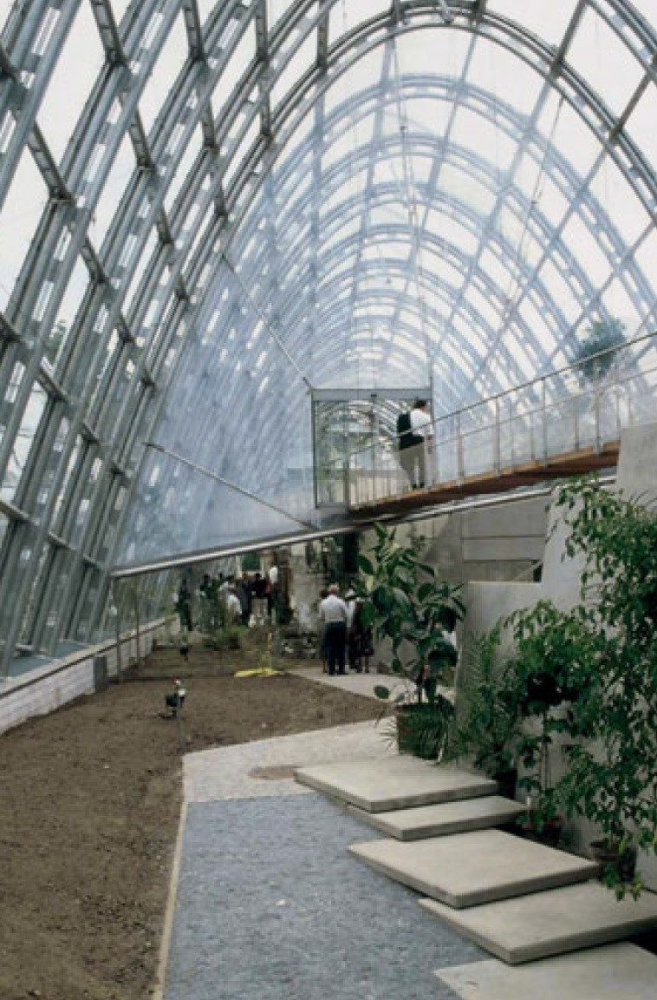
volker giencke - gewächshäuser botanischer garten, graz
Eine parabelförmige Tragstruktur aus Stahlrohren
macht den Botanischen Garten in Graz einzigartig und
geben ihm seine technisierte Ästhetik. Schwebende
Wege führen durch den Garten und Räume sind durch
transluzente Folien voneinander getrennt.
macht den Botanischen Garten in Graz einzigartig und
geben ihm seine technisierte Ästhetik. Schwebende
Wege führen durch den Garten und Räume sind durch
transluzente Folien voneinander getrennt.
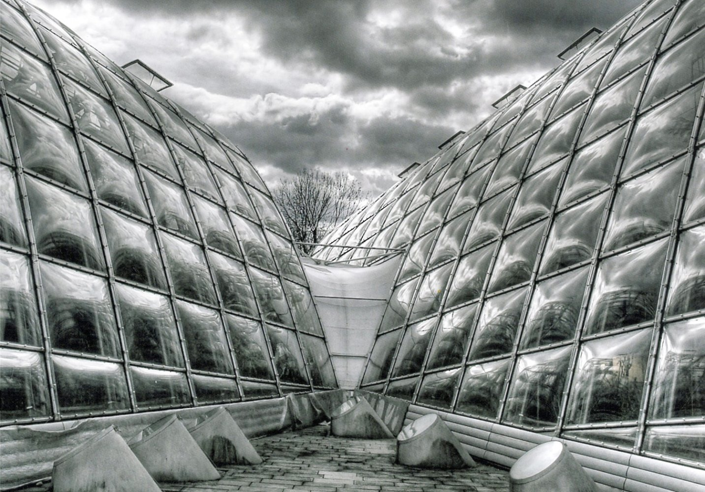
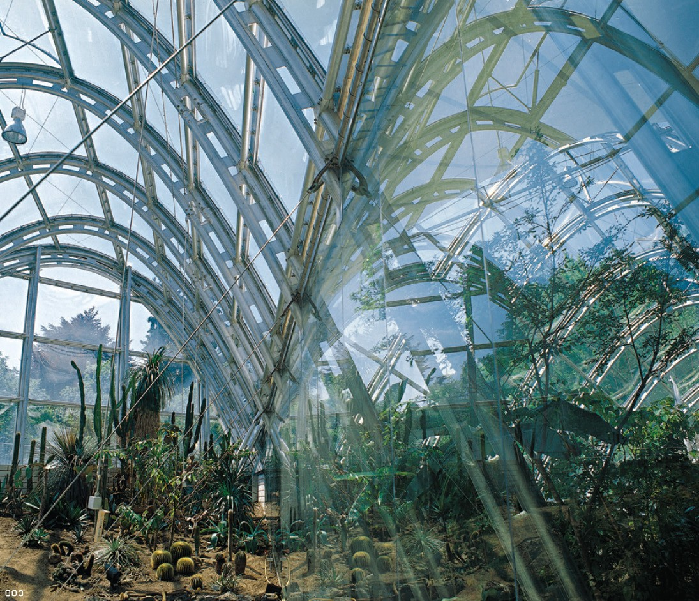
Im Grundriss fällt die fast schon willkürlich wirkende
Zusammenstellung der einzelnen Parabelbögen auf. Jede
Halle steht schief zu der anderen und steigt in der Höhe an
oder senkt sich sogar bis in den Boden.
Zusammenstellung der einzelnen Parabelbögen auf. Jede
Halle steht schief zu der anderen und steigt in der Höhe an
oder senkt sich sogar bis in den Boden.

volker giencke - gewächshäuser botanischer garten, graz
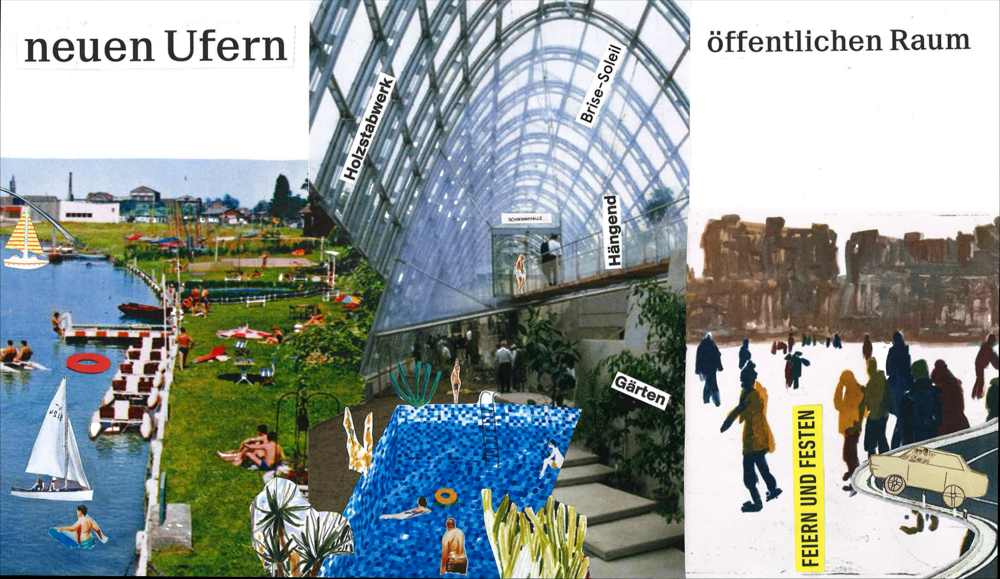
konzeptdarstellung collage
Auf dem Bauplatz sollen laute sowie leise Aktivitäten ihren
Platz finden. Leider schliessen sich diese Dinge
aber gegenseitig diametral aus. Aus diesem Grund werden sie
im Städtebau voneinander getrennt. Zusätzlich werden Bezüge
zu den benachbarten Quartieren hergestellt.
Platz finden. Leider schliessen sich diese Dinge
aber gegenseitig diametral aus. Aus diesem Grund werden sie
im Städtebau voneinander getrennt. Zusätzlich werden Bezüge
zu den benachbarten Quartieren hergestellt.
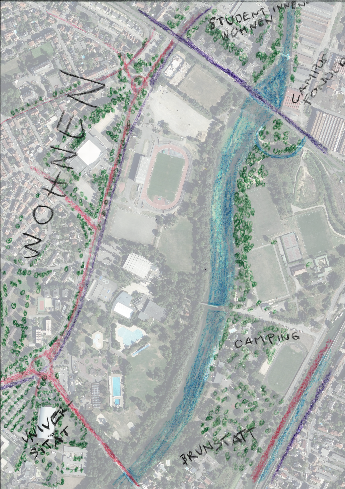
analyse umgebung bauplatz
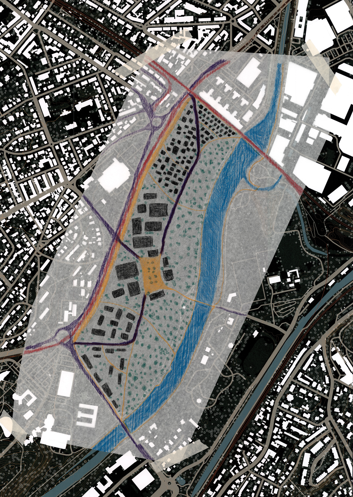
skizze städtebau
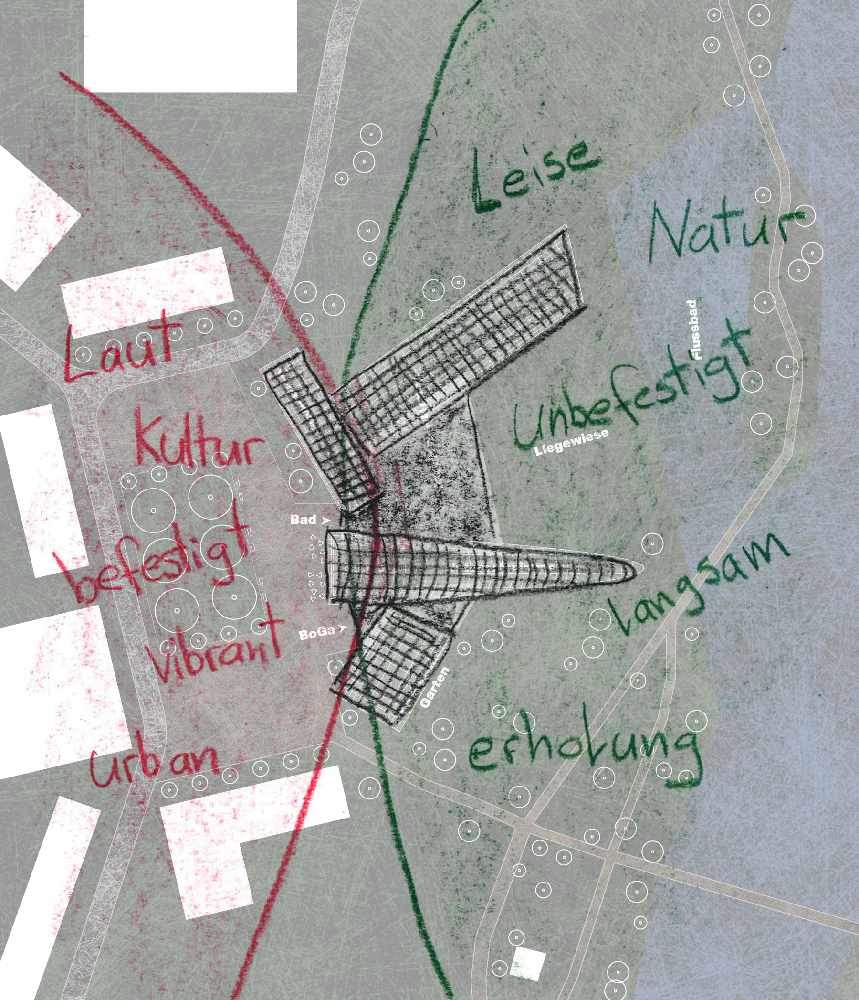
skizze gebäude als puffer
Der Gebäudekomplex soll unterschiedlich und zu
verschiedenen Tageszeiten genutzt werden. Frei zugängliche
Bereiche stehen den Menschen aus dem Quartier während
den Öffnungszeiten frei zur Verfügung, während der Einlass
ins Hallenbad zutrittsbeschränkt bleibt.
verschiedenen Tageszeiten genutzt werden. Frei zugängliche
Bereiche stehen den Menschen aus dem Quartier während
den Öffnungszeiten frei zur Verfügung, während der Einlass
ins Hallenbad zutrittsbeschränkt bleibt.
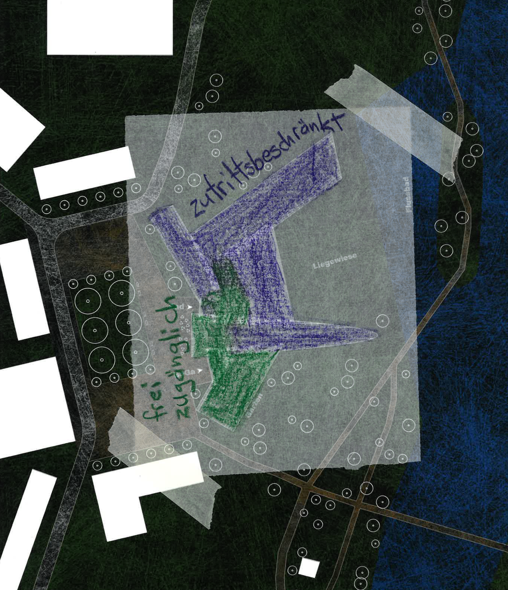
skizze zugänglichkeit
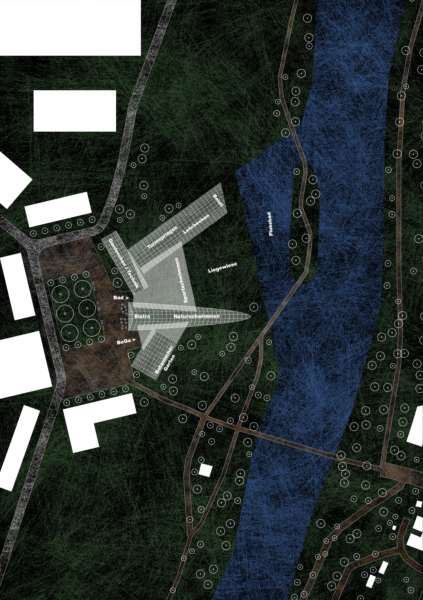
nutzungen und umgebung
Für die beiden Hauptnutzungen hat das Gebäude zwei separate Eingänge.
Die Garderoben sowie Technik und Betriebsräume befinden sich in der am meisten zum
Platz zugewandten Halle. Die Nordosthalle bringt einen Sprungturm, Lehrschwimmbecken
sowie ein von aussen zugängliches „Badi-Beizli“ unter. Das Sportbecken durchsticht beide
Hallen und spannt eine Membran über sich auf. Die West-Ost-Halle eignet sich für
Spassschwimmer*innen und Kinder. Ihre Platzfassade wird mit einem Bistro bespielt. Der
Botanische Garten befindet sich in der Südwesthalle.
Die Garderoben sowie Technik und Betriebsräume befinden sich in der am meisten zum
Platz zugewandten Halle. Die Nordosthalle bringt einen Sprungturm, Lehrschwimmbecken
sowie ein von aussen zugängliches „Badi-Beizli“ unter. Das Sportbecken durchsticht beide
Hallen und spannt eine Membran über sich auf. Die West-Ost-Halle eignet sich für
Spassschwimmer*innen und Kinder. Ihre Platzfassade wird mit einem Bistro bespielt. Der
Botanische Garten befindet sich in der Südwesthalle.
grundriss eg mit wegleitung
Der Botanische Garten sowie das Bistro und die
Tribünen sind frei mit Strassenschuhen
zugänglich.
Besuchende werden durch die Garderoben in die
Barfusszonen geleitet, welche das Bad über
hängende Wege im Obergeschoss erschliessen.
Tribünen sind frei mit Strassenschuhen
zugänglich.
Besuchende werden durch die Garderoben in die
Barfusszonen geleitet, welche das Bad über
hängende Wege im Obergeschoss erschliessen.
grundriss og mit wegleitung
Der Wasserkreislauf bildet eine Symbiose zwischen Botanischem Garten und Schwimmbad. Abgebadetes Wasser wird zur Bewässerung des
Gartens verwendet, welcher es durch Trocken- und Nassfilter spült und schliesslich wird es als gereinigtes Wasser wieder zurück in das Becken gebracht.
Gartens verwendet, welcher es durch Trocken- und Nassfilter spült und schliesslich wird es als gereinigtes Wasser wieder zurück in das Becken gebracht.
schnitt mit wasserkreislauf
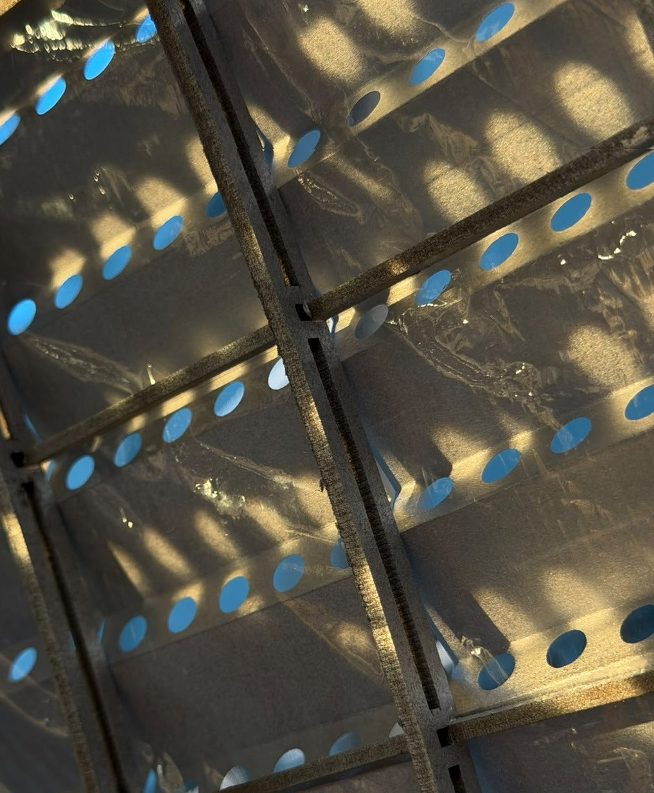
modellbild verschattung
Die runden Öffnungen der Verschattungsvorrichtungen
lassen auch bei geschlossenem Zustand noch ein bisschen
Licht hinein.
lassen auch bei geschlossenem Zustand noch ein bisschen
Licht hinein.
Je höher der Glasanteil eines Schwimmbades ist, desto
mehr Heizenergie benötigt es, da es weniger gedämmt
werden kann. Die hohen U-Werte der Glasflächen ziehen
zusätzlich mit sich, dass sich an der Glasinnenseite
schneller Tauwasser bildet. Jedoch erzielt es mehr
solare Erträge, welche den zusätzlichen
Heizenergiebedarf übers Jahr decken könnten.
mehr Heizenergie benötigt es, da es weniger gedämmt
werden kann. Die hohen U-Werte der Glasflächen ziehen
zusätzlich mit sich, dass sich an der Glasinnenseite
schneller Tauwasser bildet. Jedoch erzielt es mehr
solare Erträge, welche den zusätzlichen
Heizenergiebedarf übers Jahr decken könnten.
schema auswirkungen glashaus
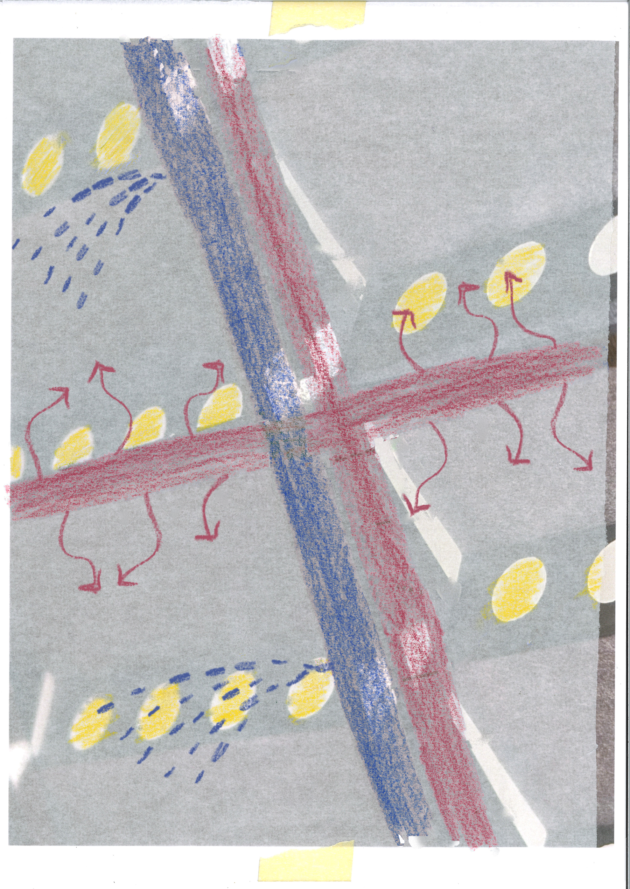
skizze haustechnische anlagen
Die Stahlrohre sind Tragstruktur und Haustechnik zugleich, das innere
Rohr führt die Wasserleitungen und das äussere die Lüftung. Die
Lüftungsauslässe müssen möglichst nah an den Glasflächen platziert
sein, um Tauwasserbildung zu vermeiden.
Rohr führt die Wasserleitungen und das äussere die Lüftung. Die
Lüftungsauslässe müssen möglichst nah an den Glasflächen platziert
sein, um Tauwasserbildung zu vermeiden.
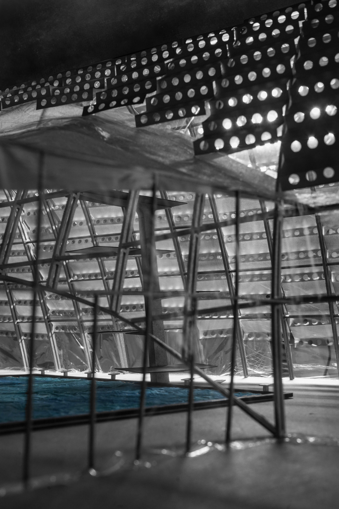
modellbild aussen
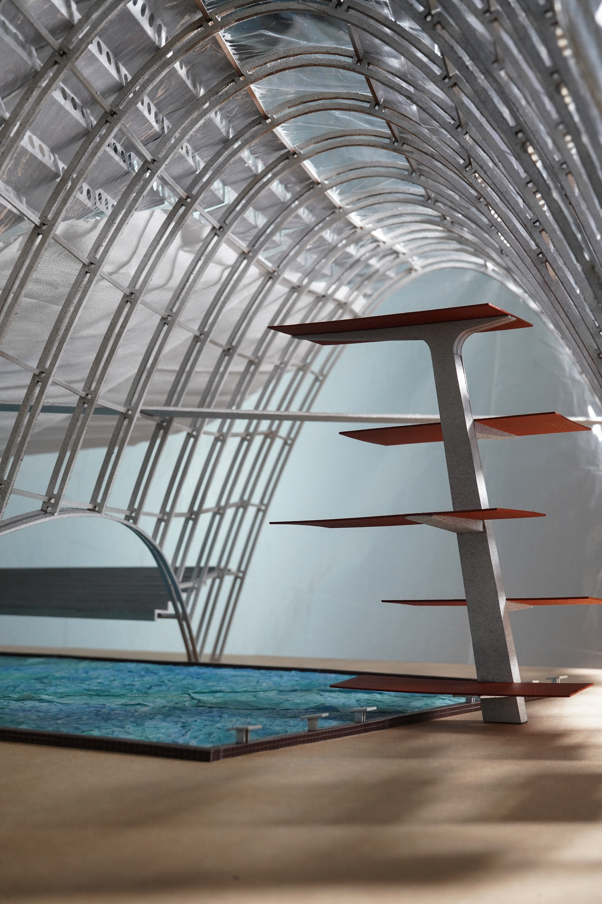
modellbild innen